Livret de tutoriels — Prise en main et maîtrise du simulateur
Ce livret accompagne l'élève de Bac Pro Télécommunications pas à pas : découvrir l'interface, construire un réseau fibre, lire un bilan optique, utiliser les instruments de mesure et dépanner une liaison. Chaque tutoriel se termine par une courte vérification « Je sais faire ».
Sommaire
Découvrir l'interface — les 4 zones, les 3 modes, les couleurs
Placer et régler des équipements — boîte à outils, inspecteur, vue
Relier les équipements par des câbles — sens amont → aval, raccordements
Bâtiments et immeubles — gaine intérieure, étages, colonne montante
Lire le bilan optique — pertes, puissance reçue, marge, statuts
Le photomètre — mesurer une puissance en dBm
Le stylo optique (VFL) — suivre une fibre et voir une fuite
Le réflectomètre (OTDR) — lire une courbe et un tableau d'événements
Simuler et dépanner des pannes — méthode de dépannage
TP, sauvegarde et rendu du travail
Équipements actifs et services — configuration, diagnostic pas à pas
Les pannes de configuration — symptômes et correction
Fin du livret : fiche mémo (valeurs de référence) et grille d'auto-évaluation.
Avant de commencer : ouvrez le fichier index.html du dossier OptiSim dans un navigateur (Chrome, Firefox, Edge). Aucune installation ni connexion Internet n'est nécessaire.
Barre d'état : mode en cours + conseil de l'action à faire
Zone
À quoi elle sert
1. Barre supérieure
Gérer les fichiers, annuler/rétablir, changer de mode, ouvrir la bibliothèque Exemples & TP et la Documentation, changer de thème (clair/sombre) avec ◐.
2. Boîte à outils
Tous les équipements classés par famille (NRO, extérieur, bâtiments, abonnés), les câbles et les instruments de mesure. Une barre de recherche permet de trouver un élément par son nom.
3. Canevas
Le plan de travail quadrillé où l'on construit le réseau. Molette = zoom, glisser le fond = déplacer la vue.
4. Inspecteur
Affiche les réglages de l'élément sélectionné (onglet Propriétés), le Bilan optique détaillé et la courbe OTDR.
Barre d'état (en bas)
Rappelle le mode actif et donne, à chaque instant, la prochaine action attendue. Lisez-la quand vous êtes bloqué !
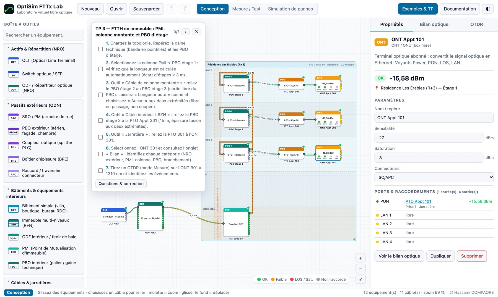
L'écran d'OptiSim avec le TP 3 chargé : boîte à outils (gauche), panneau des consignes du TP et canevas (centre), inspecteur de l'ONT sélectionné (droite).
De gauche à droite : fichiers, annuler / rétablir, sélecteur de mode (ici « Simulation de pannes »), boutons des pannes, bibliothèque, documentation, thème.
Les 3 modes de travail
Mode
On y fait…
Conception
Placer les équipements, tirer les câbles, régler les propriétés.
Mesure / Test
Utiliser le photomètre, l'OTDR et le VFL, comme un technicien sur le terrain.
Simulation de pannes
Injecter des pannes (visibles ou cachées), les révéler, les réparer.
Le code couleur
Badges d'état des équipements
Vert
OK : puissance correcte
Orange
Signal faible : marge < 3 dB
Rouge
LOS (perte de signal) ou saturation
Gris
Non raccordé / pas de lumière
Couleur des ports
Vert
Connecteur APC (poli en angle)
Bleu
Connecteur UPC (poli droit)
Jaune
Port cuivre RJ45 (Ethernet)
Entrées à gauche de l'équipement, sorties à droite.
Raccourcis clavier
Suppr
Supprimer l'élément sélectionné
Ctrl+Z / Ctrl+Y
Annuler / rétablir
Échap
Abandonner l'outil en cours
Ctrl+S
Sauvegarder (fichier JSON)
F
Recadrer la vue sur tout le réseau
Molette
Zoom avant / arrière
Je sais faire :
nommer les 4 zones de l'écran et leur rôle ;
passer d'un mode à l'autre ;
expliquer ce que signifie un badge orange et un port bleu.
Durée : 15 minObjectif : ajouter, configurer, dupliquer et supprimer des équipements
Ajouter un équipement
Cliquez sur Nouveau pour partir d'un canevas vide.
Dans la boîte à outils, famille Actifs & Répartition (NRO), glissez l'« OLT » sur le canevas. Variante : un simple clic sur l'élément le pose au centre de la vue.
Ajoutez de la même façon un « ODF / Répartiteur optique », un « SRO / PM », une « PTO » et un « ONT / ONU ».
Rangez-les de gauche à droite dans l'ordre du réseau : OLT → ODF → SRO → PTO → ONT. Pour déplacer un équipement, faites-le glisser.
Astuce : tapez « pto » dans la zone Rechercher un équipement… pour filtrer la boîte à outils.
Régler un équipement avec l'inspecteur
Cliquez sur l'OLT : l'onglet Propriétés de l'inspecteur affiche ses réglages.
Renommez-le « OLT NRO » dans le champ Nom / repère.
Relevez ses valeurs par défaut :
Puissance d'émission
dBm
Longueur d'onde
nm
Classe GPON
Cliquez sur le SRO et regardez le champ Coupleur intégré. Laissez « 1:8 » pour l'instant.
Cliquez sur l'ONT : relevez sa sensibilité (−27 dBm) et son seuil de saturation (−8 dBm). Ces deux valeurs bornent la plage de fonctionnement.
Dupliquer, supprimer, annuler
Dupliquer : sélectionnez l'équipement puis le bouton Dupliquer de l'inspecteur (la copie est décalée et nommée « (copie) »).
Supprimer : sélection puis Suppr. Les câbles reliés sont supprimés avec lui.
Annuler une erreur :Ctrl+Z (ou ↶), rétablir avec Ctrl+Y.
Se déplacer dans le schéma
Zoom : molette de la souris, ou boutons +− en bas du canevas.
Déplacer la vue : cliquer-glisser sur le fond quadrillé.
Tout voir : touche F ou bouton ⤢.
À retenir : l'interface signale par une petite notification en bas à droite chaque action réalisée (« Câble créé », « Panne injectée »…). Lisez-les !
Je sais faire :
placer un équipement par glisser-déposer et par clic ;
renommer et modifier une propriété dans l'inspecteur ;
Règle d'or : on câble toujours de l'amont (côté NRO, la source) vers l'aval (côté abonné). On clique d'abord sur l'équipement de départ, puis sur l'équipement d'arrivée. Le simulateur calcule le sens descendant de la lumière.
Créer un câble
Dans Câbles & jarretières, cliquez sur « Jarretière optique (patch cord) ». La barre d'état indique : cliquez sur l'équipement de départ (amont).
Cliquez sur l'OLT, puis sur l'ODF. Une fenêtre s'ouvre.
Vérifiez les extrémités affichées (Amont (sortie) → Aval (entrée)), saisissez 2 m, connecteurs SC/APC, puis Créer le câble.
Choisissez « Câble Monomode G.652D », cliquez ODF puis SRO. Saisissez 2 et l'unité km. Raccordement amont et aval : Épissure par fusion (0,05 dB).
Choisissez « Câble Drop extérieur », reliez SRO → PTO : 80 m, fusion aux deux extrémités.
Terminez par une jarretière PTO → ONT (2 m, SC/APC). Les badges passent au vert et l'ONT allume ses voyants.
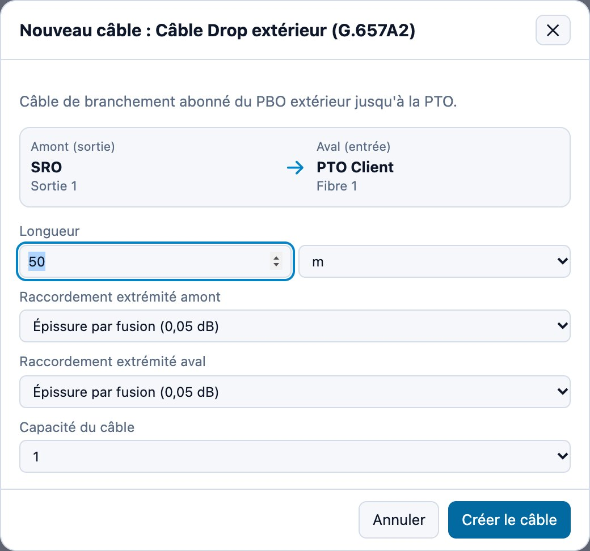
La fenêtre de création d'un câble drop SRO → PTO.
Pour abandonner un câble commencé : Échap. Pour modifier un câble existant : cliquez dessus, l'inspecteur affiche sa longueur, ses raccordements et ses ports.
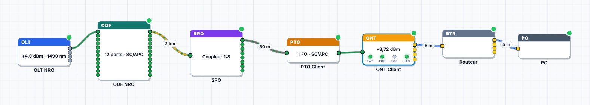
Résultat attendu : OLT → ODF → SRO 1:8 → PTO → ONT (−8,72 dBm), puis routeur et PC en Cat6. Tous les badges sont verts.
Cuivre : ONT / switch → PC, téléphone, décodeur (100 m maxi)
—
Le brassage port à port sur l'ODF
Sur un ODF (et une PTO), le port Amont n est relié uniquement au port Aval n. Si une jarretière est branchée sur le mauvais port, l'abonné ne reçoit plus rien : c'est une erreur de brassage. Pour changer de port, sélectionnez le câble et modifiez le port dans l'inspecteur.
Ne jamais mélanger APC (vert) et UPC (bleu) : le simulateur compte +3 dB par accouplement incompatible et affiche un avertissement — comme sur le terrain, où l'on risque d'abîmer les férules.
Je sais faire :
créer un câble dans le bon sens (amont → aval) ;
choisir le bon type de câble et le bon raccordement ;
modifier la longueur ou le port d'un câble existant.
Durée : 20 minObjectif : raccorder une villa et un immeuble R+N
Le bâtiment simple (villa, boutique, bureau)
Glissez un « Bâtiment simple » sur le canevas. C'est une zone : on y dépose des équipements.
Sélectionnez le bâtiment et réglez la Gaine intérieure (adduction → PTO), par exemple 15 m.
Faites glisser la PTO et l'ONT à l'intérieur du cadre : une notification confirme « PTO placé dans « Villa » ».
Tirez un drop depuis le PBO (extérieur) vers la PTO. La fenêtre prévient : la gaine intérieure (15 m) sera ajoutée automatiquement.
Pourquoi ? Sur le terrain, le câble entre par le point d'adduction puis chemine dans la gaine jusqu'à la PTO. La longueur réelle de fibre = longueur du drop + longueur de gaine.
L'immeuble multi-niveaux (R+N)
Glissez un « Immeuble multi-niveaux ». Dans l'inspecteur, réglez le nombre d'étages (R+1 à R+12), le sous-sol et la hauteur d'étage (3 m par défaut).
Placez le PMI au sous-sol (ou au RDC), un PBO intérieur dans chaque étage desservi, les PTO et ONT dans les logements.
Reliez le PMI au PBO du 1er étage avec le « Câble de colonne montante » : gardez Longueur auto cochée.
Pour monter à l'étage suivant, partez d'une sortie libre du PBO avec un nouveau câble de colonne, raccordement « Aucun » aux deux extrémités (la fibre passe sans être coupée).
Reliez chaque PBO à la PTO du logement avec un câble intérieur LSZH (épissure fusion).
Compartimenter : logements, bureaux, pièces
Glissez un « Local » dans le bâtiment ou dans un étage. Ajustez-le avec les poignées de ses coins et de ses côtés.
Dans l'inspecteur, donnez-lui un nom (« Appt 301 », « Comptabilité », « Séjour ») et un type : logement, bureau, commerce, pièce, parties communes, local technique.
Déposez PTO, ONT et appareils dans le local. L'inspecteur indique alors « Résidence — Étage 3 — Appt 301 ». Déplacer le local déplace ses équipements.
Résidence R+3 (TP 3) : PMI dans le local technique du sous-sol, colonne montante dans la gaine technique, un PBO sur chaque palier, PTO et ONT dans les appartements.
Calcul de la colonne montante
Longueur = écart d'étages × hauteur d'étage. Exemple : du sous-sol (niveau −1) au 3e étage avec 3 m par étage : (3 − (−1)) × 3 = 12 m.
Trajet
Écart d'étages
Longueur (h = 3 m)
Sous-sol → étage 1
Étage 1 → étage 2
RDC → étage 5 (h = 2,8 m)
Vocabulaire à connaître
PMI
Point de Mutualisation d'Immeuble : armoire en pied d'immeuble qui reçoit le câble opérateur (brassage, parfois coupleur).
PBO d'étage
Boîtier sur le palier (gaine technique) : on y « pique » les fibres de la colonne vers les logements.
Gaine technique
Passage vertical réservé aux câbles (bande en pointillés sur le canevas).
PTO
Prise Terminale Optique, dans le logement. L'ONT s'y branche par une jarretière.
Parties communes
Palier, hall, caves : zones partagées de l'immeuble où passent la colonne montante et les PBO. Les logements sont des parties privatives.
Je sais faire :
régler la gaine intérieure d'une villa ;
construire un immeuble avec PMI, colonne montante et PBO d'étage ;
calculer la longueur d'une colonne montante ;
découper un bâtiment en logements, bureaux ou pièces.
Sélectionnez l'ONT, puis l'onglet Bilan optique de l'inspecteur.
Le bilan liste chaque perte tronçon par tronçon, regroupée par catégorie : NRO, Transport & distribution, ODF/PMI, Colonne montante, PBO d'étage, Branchement abonné.
En bas : atténuation totale, puissance reçue, marge et statut.
Exemple guidé : la liaison du tutoriel 3 (λ = 1490 nm)
Élément
Calcul
Perte (dB)
Traversée ODF
1 connecteur
0,50
Épissures du câble de transport
2 × 0,05
0,10
Fibre G.652D
2 km × 0,25 dB/km
0,50
SRO : brassage + coupleur 1:8
0,5 + 10,5
11,00
Épissures du drop
2 × 0,05
0,10
Fibre du drop
0,08 km × 0,25 dB/km
0,02
Connecteur PTO
1 connecteur
0,50
Atténuation totale
12,72
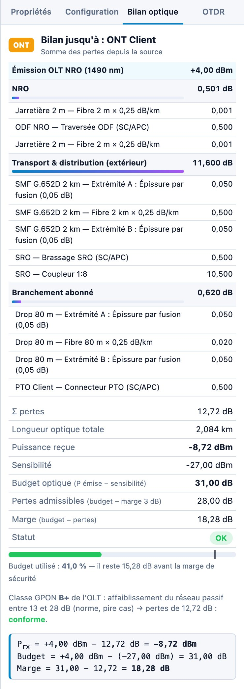
Le même bilan dans l'onglet « Bilan optique », avec le budget optique et la marge.
Puissance reçue : 4 − 12,72 = −8,72 dBm. Marge : −8,72 − (−27) = 18,28 dB. L'ONT est dans sa plage [−27 ; −8] dBm : OK, mais proche de la saturation.
Pourquoi les jarretières ne comptent-elles pas ? Leurs connecteurs sont déjà comptés dans la traversée de l'ODF ou de la PTO. On évite ainsi de compter deux fois la même perte.
Durée : 10 minMesure : la puissance optique en dBm, port par port
Passez en mode Mesure / Test.
Dans Outils de mesure, cliquez sur Photomètre. Une fenêtre d'instrument apparaît sur le canevas.
Cliquez sur un équipement : l'écran affiche la puissance en dBm, la longueur d'onde, l'atténuation cumulée depuis la source et le statut. Choisissez le port à mesurer s'il y en a plusieurs.
Mesurez « de proche en proche », de la source vers l'abonné, et notez les valeurs :
Point de mesure
ODF
SRO
PTO
ONT
Puissance (dBm)
La différence entre deux points successifs donne la perte du tronçon. Une chute anormale localise le défaut entre ces deux points.
Un affichage LOS signifie qu'aucune lumière n'arrive.
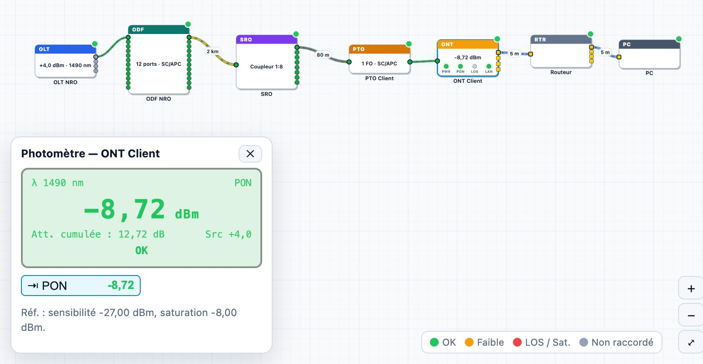
Le photomètre sur l'ONT : puissance, longueur d'onde, atténuation cumulée, statut et seuils de référence.
Je sais faire :
mesurer une puissance au photomètre et la comparer au bilan ;
localiser un tronçon défectueux par mesures de proche en proche.
Durée : 10 minPrincipe : une lumière rouge visible (650 nm) injectée dans la fibre
En mode Mesure / Test, choisissez Stylo optique (VFL).
Cliquez sur l'équipement où injecter la lumière (par exemple l'ODF). Les câbles éclairés s'illuminent en rouge.
Choisissez le sens : Sens aval → (vers l'abonné) ou ← Sens amont (vers le NRO).
La lumière traverse les ODF, PMI et PBO. Au niveau d'une cassure ou d'une courbure excessive, elle s'échappe : une fuite rouge apparaît à l'endroit du défaut et l'instrument indique le nombre de fuites visibles.
Cliquez sur Éteindre le VFL pour terminer.
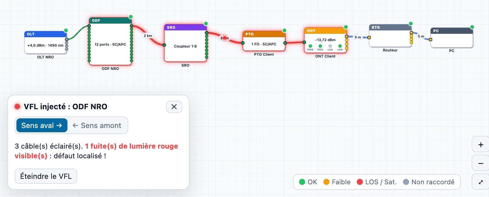
VFL injecté sur l'ODF, sens aval : la lumière rouge suit la fibre et une fuite apparaît sur le drop (panne cachée).
Usage terrain : le VFL sert à identifier une fibre, vérifier sa continuité et localiser un défaut sur les derniers mètres (PTO, jarretière, boîtier). Sa portée réelle est limitée à quelques kilomètres.
Je sais faire :
injecter le VFL depuis un équipement ;
choisir le sens (aval / amont) ;
repérer une fuite et en déduire l'emplacement du défaut.
Durée : 25 minPrincipe : l'OTDR envoie des impulsions et analyse la lumière renvoyée pour « voir » la fibre sur toute sa longueur
Réaliser un tir
En mode Mesure / Test, choisissez Réflectomètre OTDR, puis cliquez sur l'équipement visé (par exemple l'ONT). Le tir part de la tête de réseau.
L'onglet OTDR de l'inspecteur affiche la courbe et le tableau des événements (distance, perte, type).
Changez la longueur d'onde (1310 / 1550 nm) et la bobine amorce si besoin.
Cliquez sur une ligne du tableau pour zoomer sur l'événement. Vue complète revient à la courbe entière ; Tirer sur la sélection refait un tir vers l'équipement sélectionné.
L'OTDR est aveugle sur les premiers mètres. On intercale une bobine amorce de 500 m : le premier connecteur du réseau apparaît donc à 500 m sur la trace.
Distance réelle dans le réseau = distance lue sur l'OTDR − longueur de la bobine amorce.
Exemple (liaison du tutoriel 3, tir à 1310 nm vers l'ONT)
Distance lue
Type
Perte
Interprétation
500 m
Réflectif
0,30 dB
Raccord bobine → réseau
502 m
Réflectif
0,55 dB
ODF + épissure du câble de transport
2 502 m
Coupleur
11,10 dB
SRO (coupleur 1:8) + épissures
2 582 m
Réflectif
0,55 dB
Épissure du drop + PTO
2 584 m
Fin de fibre
—
ONT (extrémité)
Astuce de pro : une courbure perd plus à 1550 nm qu'à 1310 nm, une épissure perd pareil aux deux longueurs d'onde. Comparer les deux tirs permet de les distinguer.
Je sais faire :
réaliser un tir OTDR à 1310 et 1550 nm ;
identifier les événements réflectifs, non réflectifs, coupleur et fin de fibre ;
calculer la distance réelle d'un défaut en retirant la bobine amorce.
Durée : 25 minObjectif : identifier une panne par ses symptômes, intervenir, vérifier
D'où viennent les pannes ?
Le TP 5 contient des pannes cachées. L'enseignant peut aussi vous donner un sujet (fichier sujet-….json, bouton Ouvrir, tutoriel 10) : réseau verrouillé, pannes cachées. Seuls les symptômes sont visibles.
Les pannes et leurs symptômes
Panne
Effet
Signature de mesure
Fibre coupée
Plus de lumière en aval
LOS ; OTDR : fin anormale ; VFL : fuite au point de coupure
Écrasement / courbure excessive
+5 dB à 1490/1550 nm (+2,5 dB à 1310 nm)
OTDR : événement non réflectif plus fort à 1550 qu'à 1310 ; VFL : fuite
Localiser le tronçon : photomètre de proche en proche (ODF → SRO/PMI → PBO → PTO → ONT) et comparaison avec le bilan théorique.
Mesurer la distance : tir OTDR, puis distance réelle = distance lue − bobine amorce. Comparer 1310 et 1550 nm.
Confirmer : VFL pour voir la fuite ; inspection du connecteur.
Intervenir puis re-mesurer : mode Dépannage, sélectionner le câble ou l'équipement, puis Reprendre le câble ou Nettoyer / remplacer. Toujours vérifier par une mesure !
Règle du jeu : l'intervention remet l'élément en état sans dire s'il était en panne. Intervenez seulement après avoir localisé le défaut : en examen, chaque intervention inutile est pénalisée et toutes vos actions sont enregistrées.
Mode « Dépannage » : la section « Intervention » d'un câble.
Je sais faire :
associer une panne à sa signature de mesure ;
appliquer la méthode de dépannage en 5 étapes ;
intervenir sur l'élément défectueux et vérifier par une mesure.
Cliquez sur Exemples & TP. La bibliothèque présente les 7 TP intégrés (TP 1 à 5 sur la fibre, TP 10 et 11 sur les services) et des exemples (FTTB, campus multimode, FTTH triple play configuré, Active Ethernet…).
Pour un TP, lisez la situation professionnelle, les objectifs et les consignes pas-à-pas.
Charger la topologie du TP ouvre la version à compléter. Un panneau de consignes à cocher s'affiche sur le canevas.
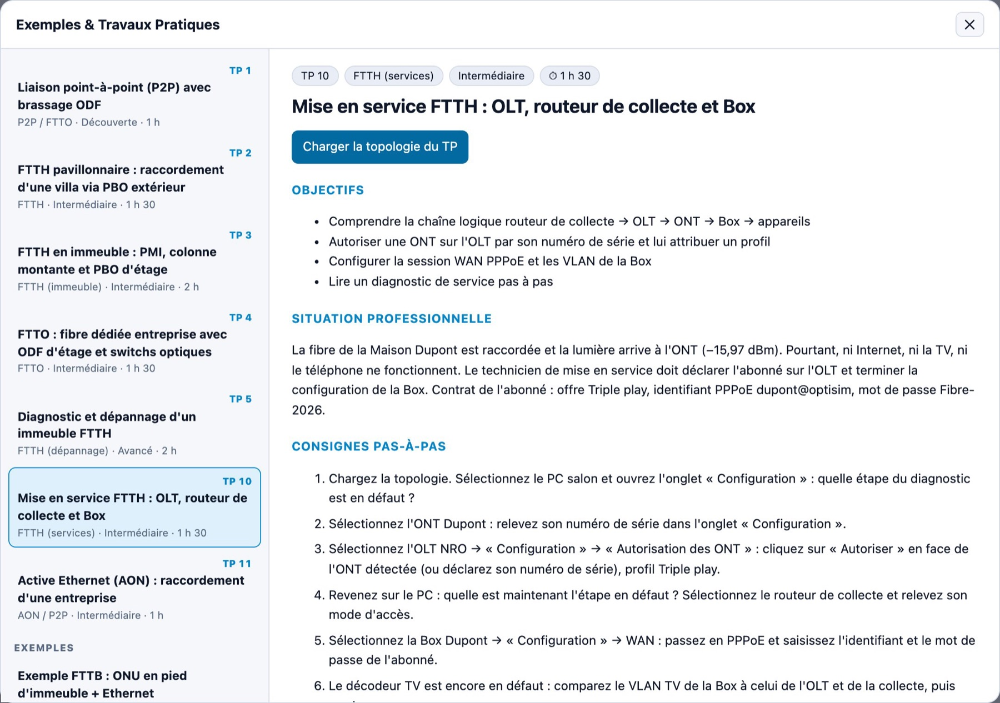
La bibliothèque des TP : liste à gauche, fiche du TP sélectionné à droite.
Sauvegarder et rendre son travail
Sauvegarder (Ctrl+S) télécharge un fichier .json. Renommez-le : NOM_Prenom_TP3.json.
Ouvrir recharge un fichier .json (le vôtre ou celui fourni par l'enseignant).
La dernière session est restaurée automatiquement à la réouverture, sur le même poste et le même navigateur. Ne comptez pas dessus pour rendre un travail : sauvegardez !
Nouveau efface le canevas (une confirmation est demandée).
Passer un examen
Ouvrir le fichier sujet-….json donné par l'enseignant. Lisez les consignes : le réseau est verrouillé (ni ajout, ni suppression, ni déplacement).
Mesurez, intervenez (tutoriel 9), corrigez la configuration (tutoriel 12). Le temps restant est affiché ; vos actions sont enregistrées dans un journal.
Rendre ma copie (Ctrl+S) : nom, prénom, classe, puis remettez le fichier copie-….json à l'enseignant.
Pendant un examen : temps restant, Consignes et Rendre ma copie.
Durée : 30 minObjectif : comprendre la chaîne de service et lire l'onglet « Configuration »
La lumière qui arrive à l'ONT ne suffit pas : pour qu'un abonné ait Internet, la TV et le téléphone, les équipements actifs doivent être configurés. Le simulateur évalue cette « couche service » dès qu'un routeur de collecte est raccordé.
La chaîne de service
Routeur de collecte (BNG)lien 10 GbE →OLT ou switch AONfibre →ONTCat6 →BoxCat6 →PC · décodeur TV · téléphone
Équipement
Ce qu'on y configure
Routeur de collecte
Raccordement au cœur de réseau, mode d'accès DHCP ou PPPoE (comptes identifiant / mot de passe), pool d'adresses WAN, VLAN Internet / TV / VoIP.
OLT (GPON)
VLAN de service, autorisation des ONT par numéro de série, profil de chaque abonné (Internet, Duo, Triple play).
Switch AON
Une fibre et un port SFP par abonné : on active le port et on choisit son profil.
ONT
Son numéro de série (inscrit sur l'étiquette).
Box
WAN (DHCP ou PPPoE, identifiants, VLAN), réseau local (adresse de la Box, serveur DHCP), Wi-Fi.
Appareils
Adressage automatique (DHCP) ou statique (adresse, masque, passerelle).
Explorer un réseau configuré
Exemples & TP → Exemple Services : FTTH triple play configuré → Charger l'exemple.
Repérez le lien de collecte : câble magenta entre le routeur de collecte et l'uplink de l'OLT (ports en losange magenta). Il ne compte pas dans le bilan optique.
Sélectionnez l'OLT NRO et ouvrez l'onglet Configuration de l'inspecteur. Dans « Autorisation des ONT », comparez la liste déclarée et les ONT détectées.
Sélectionnez la Box Dupont : l'encadré « État de la Box » indique la session WAN (adresse 100.64.0.10 en PPPoE) et l'état de chaque appareil.
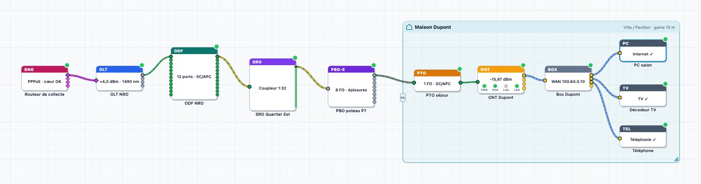
L'exemple « FTTH triple play configuré » : les trois appareils sont en service (✓).
Tutoriel 11 — Équipements actifs et services (suite)
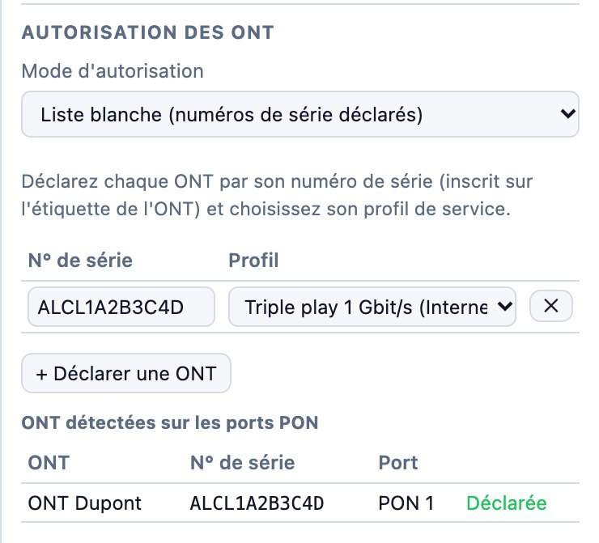
OLT : l'ONT détectée est « Déclarée ». Sinon, un bouton « Autoriser » apparaît.
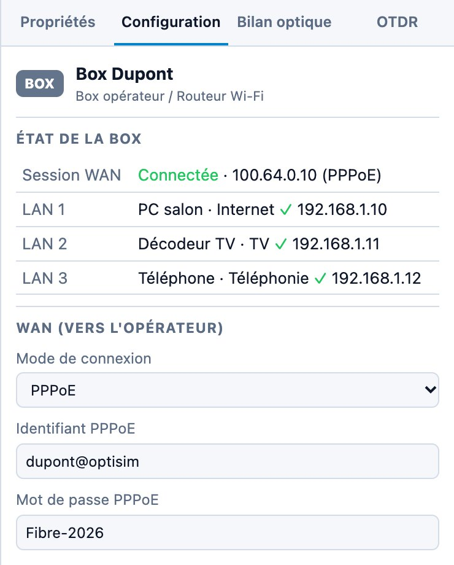
Box : état de la session WAN et formulaire PPPoE.
Le diagnostic pas à pas
Sélectionnez un appareil (PC, décodeur, téléphone) : l'onglet « Configuration » affiche son service, son adresse IP, son débit maximal et un diagnostic qui s'arrête à la première étape en défaut.
Liaison optique de l'ONT (puissance reçue, statut) ;
autorisation de l'ONT sur l'OLT (ou port activé sur le switch AON) ;
service présent dans le profil de l'abonné ;
routeur de collecte (cœur de réseau, service activé) ;
VLAN identiques de bout en bout (OLT, collecte, Box) ;
session WAN de la Box (même mode que la collecte, identifiants PPPoE) ;
adresse IP de l'appareil (bail DHCP de la Box ou adresse statique valide).
Débit maximal : en GPON, un port PON offre 2 488 Mbit/s descendants partagés entre les ONT actives ; l'abonné obtient le plus petit des deux : son profil ou sa part. En Active Ethernet, le port est dédié (1 Gbit/s).
Essayer : provoquer une erreur puis la corriger
Sélectionnez la Box et remplacez le VLAN TV 200 par 210.
Sélectionnez le décodeur TV : l'étape « VLAN TV » est en défaut (OLT 200 · collecte 200 · Box 210).
Remettez 200 sur la Box (ou Ctrl+Z) : le décodeur repasse En service.
Je sais faire :
citer les équipements de la chaîne de service et leur rôle ;
trouver l'étape en défaut d'un appareil ;
corriger une configuration et vérifier le service.
Durée : 20 minObjectif : retrouver une erreur de configuration à partir de ses symptômes
Les pannes de configuration vous sont données par l'enseignant dans un sujet (tutoriel 10, TP 12). La panne est cachée : un réglage a été modifié et coupe un service.
Ce que voit l'élève : des symptômes
Une panne de configuration cachée n'est jamais nommée. Le diagnostic indique l'étape en défaut, mais seulement le symptôme, comme un vrai équipement :
Symptôme affiché
Où chercher
ONT détectée mais refusée par l'OLT
Liste des ONT de l'OLT, numéro de série de l'ONT
Aucun trafic sur le port SFP
Ports abonnés du switch AON
Service non fourni à cet abonné
Profil (OLT ou switch AON)
Aucune réponse du réseau opérateur
Routeur de collecte, VLAN des 3 équipements
Session PPPoE refusée / aucune adresse WAN
Box (WAN) et routeur de collecte (mode, comptes)
Adresse 169.254.x.x, pas d'adresse, passerelle injoignable
Box (LAN, DHCP) et appareil (adressage)
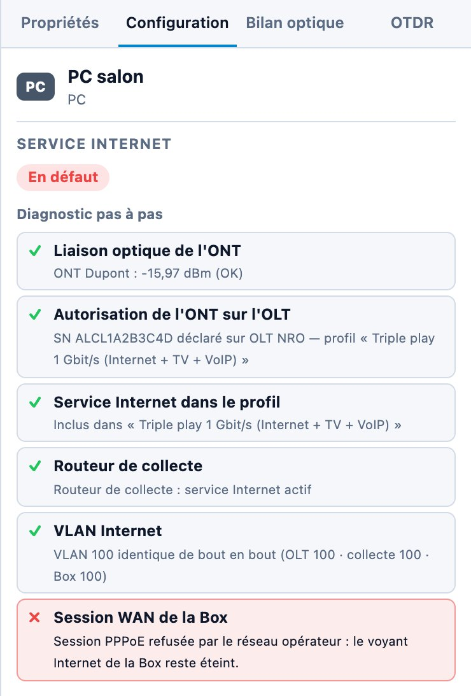
Panne cachée : seul le symptôme est affiché.
Corriger
Comparez les réglages des équipements concernés et rétablissez la bonne valeur. Vérifiez que le service revient dans le diagnostic. Si l'enseignant l'a prévu dans le sujet, le message « Panne de configuration corrigée… Bravo ! » s'affiche.
Je sais faire :
retrouver l'étape en défaut dans le diagnostic d'un appareil ;
relier un symptôme à l'équipement à vérifier ;
corriger la configuration et vérifier que le service revient.
Grille d'auto-évaluation — Je maîtrise OptiSim FTTx Lab
Nom : ............................................ Prénom : ............................................ Classe : ............ Date : ..................
Cochez votre niveau pour chaque compétence : 1 = je ne sais pas faire · 2 = avec aide · 3 = seul · 4 = je peux l'expliquer à un camarade.
Compétence
1
2
3
4
Interface et conception
Je repère les 4 zones et j'utilise les 3 modes
☐
☐
☐
☐
Je place, règle, duplique et supprime un équipement
☐
☐
☐
☐
Je câble dans le bon sens avec le bon type de câble
☐
☐
☐
☐
Je choisis le bon raccordement (fusion, mécanique, connecteur, aucun)
☐
☐
☐
☐
Je réalise un brassage port à port sur un ODF
☐
☐
☐
☐
Je raccorde une villa (gaine intérieure) et un immeuble (PMI, colonne, PBO)
☐
☐
☐
☐
Bilan optique
Je calcule un bilan à la main et je le compare à l'onglet Bilan
☐
☐
☐
☐
Je calcule une marge et j'interprète un statut (OK, faible, LOS, saturation)
☐
☐
☐
☐
Mesures
Je mesure au photomètre de proche en proche
☐
☐
☐
☐
Je réalise un tir OTDR et j'identifie les événements
☐
☐
☐
☐
Je calcule la distance réelle d'un défaut (bobine amorce)
☐
☐
☐
☐
J'utilise le VFL et je repère une fuite
☐
☐
☐
☐
Dépannage
J'associe une panne à sa signature de mesure
☐
☐
☐
☐
J'applique la méthode de dépannage en 5 étapes
☐
☐
☐
☐
Je répare et je vérifie par une mesure
☐
☐
☐
☐
Équipements actifs et services
Je décris la chaîne collecte → OLT / switch AON → ONT → Box → appareils
☐
☐
☐
☐
J'autorise une ONT, je configure la Box (WAN, VLAN, LAN) et un appareil
☐
☐
☐
☐
Je trouve et je corrige une panne de configuration à partir de ses symptômes
☐
☐
☐
☐
Organisation
Je sauvegarde, je nomme et je rends mon fichier .json
☐
☐
☐
☐
Ce que je dois retravailler :
Suite du parcours : enchaînez avec les TP intégrés 1 à 5, puis 10 et 11 (bouton Exemples & TP), puis avec le livret de TP complémentaires (fichier tp-complementaires-imprimables.html).